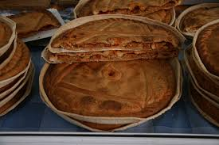
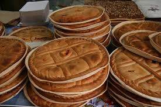
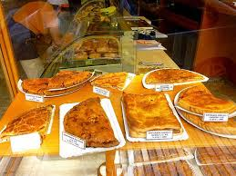
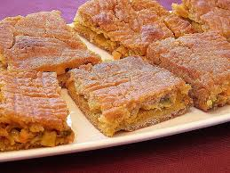

NOSSAS EMPANADAS
|  | Empanada de carne. Torta de massa folhada com carne e chouriço. |  | Empanada de atum Empanada de masa folhada atum da costa galega. |
|  | Empanadas de päo. Tortas de massa de pão recheados com carne, vegetais, atum, Zorza, Raxo, liscos,.. |  | Empanada de millo. Empanadas variadas realizadas com massa de millo. Recheio: carne, vegetais, atum, Raxo, Zorza,... |